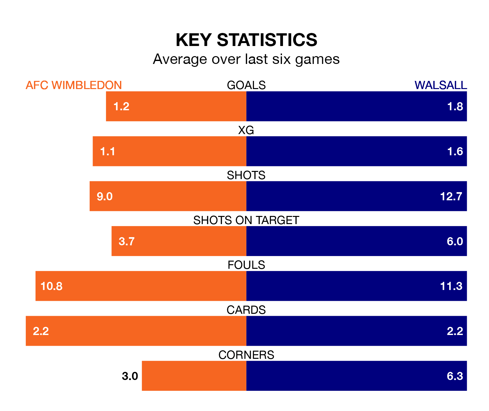

AFC Wimbledon host Walsall on Saturday at the Cherry Red Records Stadium in EFL League Two.
In their last league match, on April 20, Wimbledon lost to Tranmere Rovers 3-2 away, with their goal scored by Josh Kelly (two).
Walsall also lost, 3-2 at home against Bradford City, with Mo Faal and Ryan Stirk on the scoresheet.
In Alex Bass, Wimbledon can rely on one of the league's safest pair of hands. He has kept 16 clean sheets in his 44 appearances this season, and only one other 'keeper – Stockport County's Ben Hinchiffe – has been able to prevent the opposition scoring on more occasions in EFL League Two.
In Walsall's net, Jackson Smith has four clean sheets in 22 games. He has conceded a goal every 69 minutes, 30% more often than the 88 minutes between goals for Bass.
In the last 10 years, Wimbledon and Walsall have played each other on nine occasions. Wimbledon won five of them and Walsall four.
On average, the Dons scored 1.6 goals and the Saddlers 1.6 in those matches.
Their last meeting was on September 23, when Wimbledon won 3-1 away.
With 59 goals in 45 games so far this season, the Dons are scoring at below the league average rate with 1.3 goals per game. But they are conceding fewer than average too, letting in 50 goals at a rate of 1.1 per game.
The Saddlers, meanwhile, are average scorers, with 1.5 goals per game. They have also conceded 1.5 goals per game.
The hosts are in disappointing form in EFL League Two, with one win and two draws from their last six games.
With three wins and three losses over that period, the away side's form is better – they have taken nine points from 18, compared to Wimbledon's five.
Walsall are 10th in the table after 45 games, of which they have won 18 and drawn 11, earning 65 points.
Wimbledon are two places behind Walsall in 12th, with 16 wins and 14 draws putting them on 62 points.
Updated: 07:59 (UTC), 26/04/24